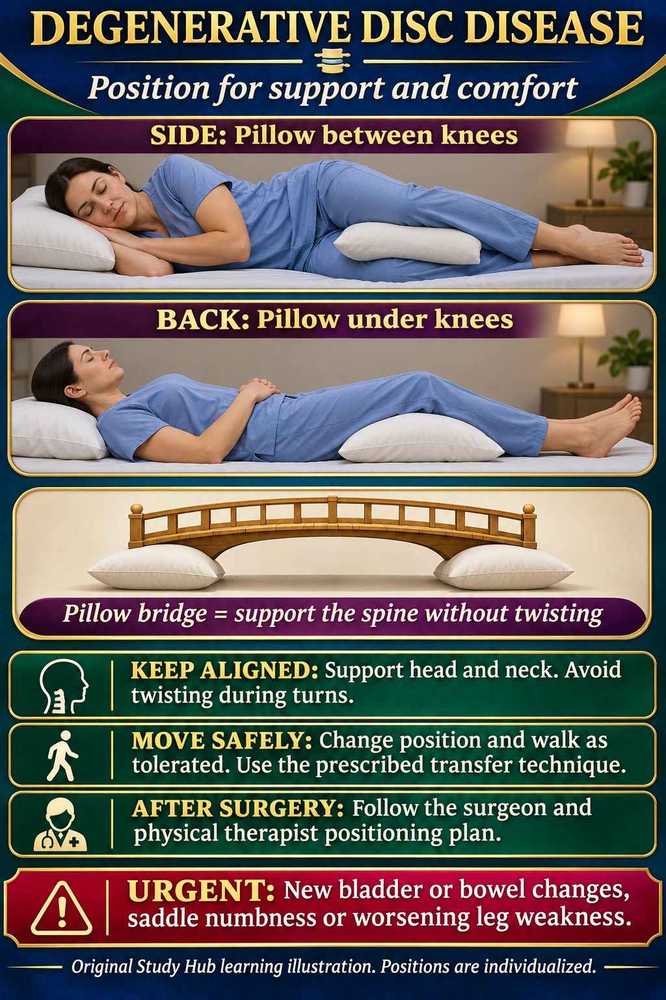

NUR 258 · Module 8 · Neurologic nursing
Degenerative disc disease: positioning
Degenerative disc disease (also spelled disk disease) may cause back pain. Use pillows and supported alignment to reduce strain.
New bladder or bowel changes, saddle numbness or worsening leg weakness needs urgent assessment.

Nursing steps in readable text
Side lying
Support the head and neck. Slightly bend the knees and place a pillow between them, adjusting for comfort.
On the back
A pillow under the knees may reduce strain. Keep the head and neck supported.
Turning and activity
Avoid twisting during turns. Use the transfer technique taught by the nurse or physical therapist. Change position and walk as tolerated.
After surgery
Use the surgeon and physical therapist instructions for positioning, lifting and activity. A general comfort position does not replace a specific postoperative plan.
Memory picture key
- Pillow bridge — Support the spine without twisting.
- Pillow between knees — Side-lying support helps keep the hips and spine aligned.
- Pillow under knees — Supine support can reduce lower-back strain.
The small memory scene uses symbols. It is an original mnemonic, not an official Picmonic product.
Practice clinical judgment
Which support can help a side-lying patient keep the pelvis and spine aligned?
Show the answer
A pillow between the knees, with the head and neck supported. Adjust to the patient and prescribed restrictions.
Sources and original handouts
No exact topic-specific Simple Nursing handout was found in the site’s indexed Simple Nursing collection. Existing related handouts stay with their original lessons.
Clinical sources checked November 7, 2026. Use the assigned course material and individual clinical orders. Artwork is educational and does not specify a device’s technical fitting procedure.